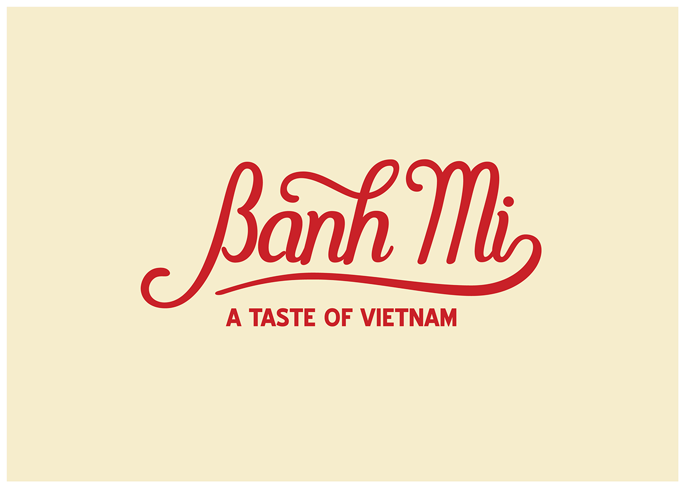

Specialty Banh Mi:
Ingredients:
Instructions:
Ingredient Preparation
- Prep your vietnamese pickles the night before
- Thinly slice your head cheese
- Thinly slice your cold cut
- Horizontally slice your cucumbers into 4 pieces
- Slice green chili into circles
- Reheat Baguette
- Cut open Baguette
Assembly
- Spread Vietnamese mayo onto both sides of the baguette
- Open Pate Can
- Spread Pate onto both sides of Baguette
- Add the folded slices of head cheese and Vietnamese ham, alternating between each type
- Add Pickled Veggies on top of sliced meats
- Add Cilantro on top of Pickled Veggies
- Add Cucumber on top of Pickled Veggies
- Optional Add Sliced Chili on top of Cucumbers
